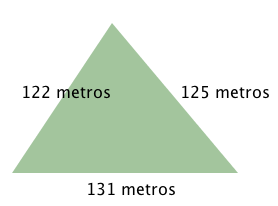
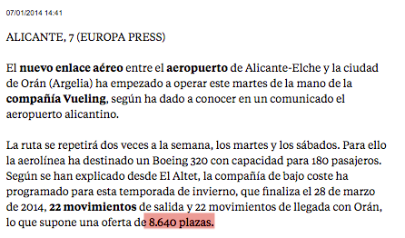

La resolución de problemas en matemáticas intenta contextualizar todos esos conceptos que, a priori, pueden resultar muy abstractos. El miedo a enfrentarse a este tipo de ejercicios es común a casi todos los alumnos de la asignatura. Sin embargo, en muchos de los casos no es infundado.
Es por ello por lo que a lo largo de los temas se han introducido algunos problemas muy sencillos. Lo fundamental en estas situaciones es saber qué nos piden y comprender toda la información que se nos da.
Con comprender no solo nos referimos a conocer el significado de todas las palabras, sino también a saber qué significan en un lenguaje matemático. Por ejemplo: "El banco nos sustrae 10 € en concepto de retención" significa que nos ha quitado o restado 10 € del saldo de nuestra cuenta.
La resolución de problemas es algo que te va a acompañar a lo largo de los dos ámbitos que tienes por delante. Te encontrarás problemas de física, tecnología, química... En todos ellos las matemáticas será la herramienta que te ayude a llegar a la solución correcta.
Aunque no hay una fórmula exacta para resolver cualquier tipo de problema, sí existen unas estrategias que te pueden ser de ayuda, aunque sin duda, lo más importante es enfrentarnos a estas situaciones sin miedo.
Estrategia.
|
Para resolver bien un problema seguiremos cuatro fases:
|
Es muy importante que analices la solución obtenida, puede ayudarte a detectar los errores. Por ejemplo, si en un problema nos preguntan el número de personas que hay y obtenemos un número negativo o decimal, lo normal es que, si está bien planteado, haya algún tipo de error en la resolución.
Reflexiona
El resultado que hemos obtenido como solución de un problema en el que con 347 metros de cuerda teníamos que vallar un terreno triangular ha sido:

Analiza por qué no es posible este resultado.
Como tenemos 347 metros de cuerda, y según nuestros resultados hemos utilizado 122+125+131=378 metros, el resultado no puede ser correcto. Lo más seguro es que hubiese un error en el desarrollo del ejercicio.
Actividad de lectura
| Lo bueno de acostumbrarse a cuestionar los resultados y a reflexionar sobre lo obtenido es que nos pude ayudar a ser más críticos en otros aspectos de nuestra vida, como por ejemplo, con la prensa. |
Razona por qué el dato de 8640 plazas que aparece en esta noticia del periódico la Vanguardia no es correcto:
